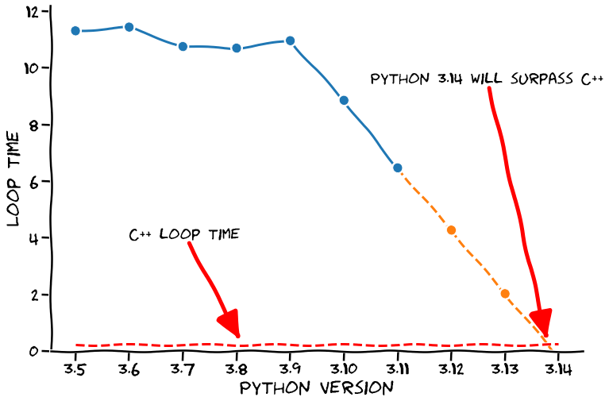
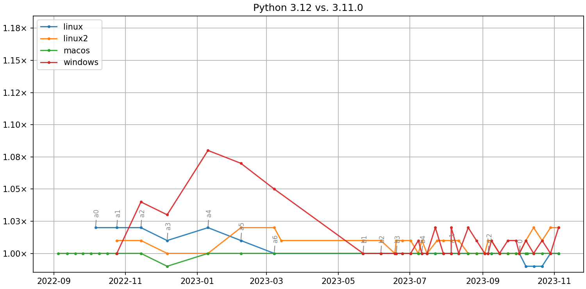
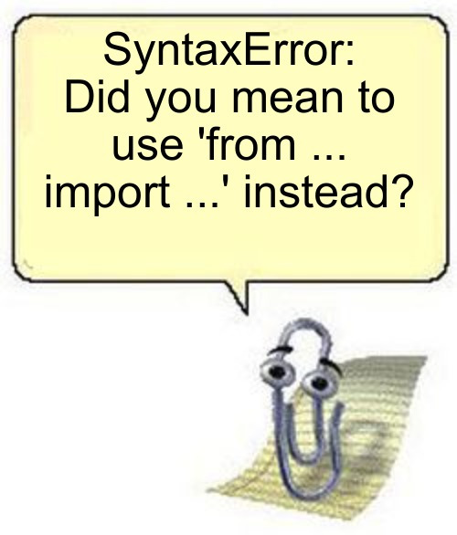

¿Qué hay de nuevo en Python 3.12?
👋
Python 3.11
Python 3.13
?
Sobre mí Nekmo
|
Programador Python |
{kind=link}
Python 2.5
¿Qué hay de nuevo en Python 3.12?
Más rápido
Python más rápido
{kind=link}
7% más rápido
Comparativa velocidad
{kind=link}
Listado de cambios
PEP 701: mejorado uso de comillas en f-strings.
Mejoradas sugerencias "tal vez quisiste decir" en los mensajes de error.
PEP 695: definir alias para tipos mediante "type".
PEP 692: utilizar
TypedDictpara anotar los**kwargs.PEP 698: decorador
@overridepara indicar métodos que sobrescriben.PEP 684: implementar un GIL por cada sub-interprete.
PEP 669: Reducir el impacto de la monitorización en CPython.
Soporte para el profiler
perfde Linux.PEP 688: Expuesto el protocolo del buffer en Python.
PEP 632: eliminado paquete
distutils.
Gracias
PEP 701: mejorado uso de comillas en f-strings
>>> name = 'World'
>>> f'Hello, {name}!'
'Hello, World!'Problema con las comillas
>>> songs = ['Take me back to Eden', 'Alkaline', 'Ascensionism']
>>> f"This is the playlist: {", ".join(songs)}"
'This is the playlist: Take me back to Eden, Alkaline, Ascensionism'Encadenar f-strings sin límite
>>> f"{f"{f"{f"{f"{f"{1+1}"}"}"}"}"}"
'2'Saltar por la ventana
Uso de barra invertida
>>> songs = ['Take me back to Eden', 'Alkaline', 'Ascensionism']
>>> print(f"This is the playlist: {"\n".join(songs)}")
This is the playlist: Take me back to Eden
Alkaline
AscensionismMejoras en mensajes de error
>>> my_string = f"{x z y}" + f"{1 + 1}"
File "<stdin>", line 1
(x z y)
^^^
SyntaxError: f-string: invalid syntax. Perhaps you forgot a comma?Mejoras en mensajes de error
>>> my_string = f"{x z y}" + f"{1 + 1}"
File "<stdin>", line 1
my_string = f"{x z y}" + f"{1 + 1}"
^^^
SyntaxError: invalid syntax. Perhaps you forgot a comma?Mejoradas sugerencias "tal vez quisiste decir" en los mensajes de error
NameError: tal vez olvidaste importar
>>> sys.version_info
Traceback (most recent call last):
File "<stdin>", line 1, in <module>
NameError: name 'sys' is not defined. Did you forget to import 'sys'?NameError: tal vez olvidaste usar self
>>> class A:
... def __init__(self):
... self.blech = 1
...
... def foo(self):
... somethin = blech
...
>>> A().foo()
Traceback (most recent call last):
File "<stdin>", line 1
somethin = blech
^^^^^
NameError: name 'blech' is not defined. Did you mean: 'self.blech'?SintaxError: tal vez quisiste usar "from ... import ..."?
>>> import a.y.z from b.y.z
Traceback (most recent call last):
File "<stdin>", line 1
import a.y.z from b.y.z
^^^^^^^^^^^^^^^^^^^^^^^
SyntaxError: Did you mean to use 'from ... import ...' instead?ImportError: No se pudo importar ..., ¿Tal vez quisiste decir ...?
>>> from collections import chainmap
Traceback (most recent call last):
File "<stdin>", line 1, in <module>
ImportError: cannot import name 'chainmap' from 'collections'. Did you mean:
'ChainMap'?Nueva mascota
{kind=link}
Typing
{kind=link}
PEP 695: definir alias para tipos mediante type
type Point = tuple[float, float]Uso de genéricos en type
type Point[T] = tuple[T, T]Creación de clases genéricas
class list[T]:
def __getitem__(self, index: int, /) -> T:
...
def append(self, element: T) -> None:
...Creación de clases genéricas antes
from typing import TypeVar, Generic
T = TypeVar("T")
class list(Generic[T]):
def __getitem__(self, index: int, /) -> T:
...
def append(self, element: T) -> None:
...Creación de funciones genéricas
def max[T](args: Iterable[T]) -> T:
...Genéricos fácil
{kind=link}
PEP 692: utilizar TypedDict para anotar los **kwargs
from typing import TypedDict, Unpack
class Movie(TypedDict):
name: str
year: int
def foo(**kwargs: Unpack[Movie]):
...PEP 698: decorador @override para indicar métodos que sobrescriben
from typing import override
class Base:
def get_color(self) -> str:
return "blue"
class GoodChild(Base):
@override # ok: overrides Base.get_color
def get_color(self) -> str:
return "yellow"
class BadChild(Base):
@override # type checker error: does not override Base.get_color
def get_colour(self) -> str:
return "red"Otras mejoras
{kind=link}
PEP 684: implementar un GIL por cada sub-interprete
PEP 669: Reducir el impacto de la monitorización en CPython
Soporte para el profiler perf de Linux
$ python -X perf script.py
$ perf report -g -i perf.dataPEP 688: Expuesto el protocolo del buffer en Python
class MyBuffer:
def __init__(self, data: bytes):
self.data = bytearray(data)
self.view = None
def __buffer__(self, flags: int) -> memoryview:
...
def __release_buffer__(self, view: memoryview) -> None:
...PEP 632: eliminado paquete distutils
¿Cuál es vuestra mejora favorita?
¡Muchas gracias a todos!
Contactar
🌐 Sitio web: nekmo.com
📫 Email: contacto@nekmo.com
🐦 Twitter: @nekmocom
📱 Telegram: @nekmo
💡 Jabber: nekmo@nekmo.org